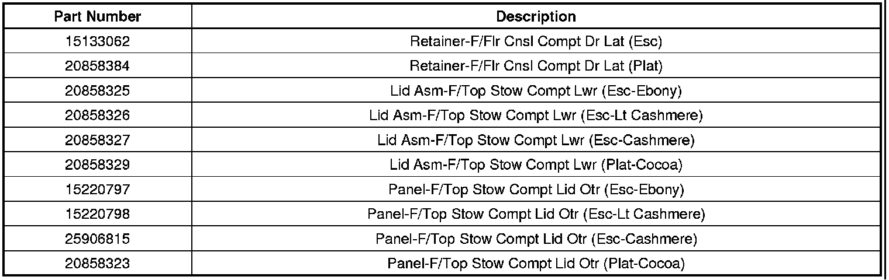

Interior - Center Console Lid Service Information
INFORMATIONBulletin No.: 09-08-49-014
Date: August 18, 2009
Subject: Information on Center Console Lid Service Component Availability
Models:
2007-2010 Cadillac Escalade, Escalade ESV, Escalade EXT
The center console lid for these vehicles was serviced as a complete assembly. This configuration led to excessive cost when only a component of the lid needed to be replaced. The release of serviceable components of this assembly will allow the technician to replace only the affected component.
Servicing Instructions
If a customer has a concern with the center console lid, determine if a serviceable component will correct the condition. Do not replace the complete lid assembly if a component will correct the condition. Use the parts list below to determine if a component is available to correct the condition.

Parts Information

Disclaimer